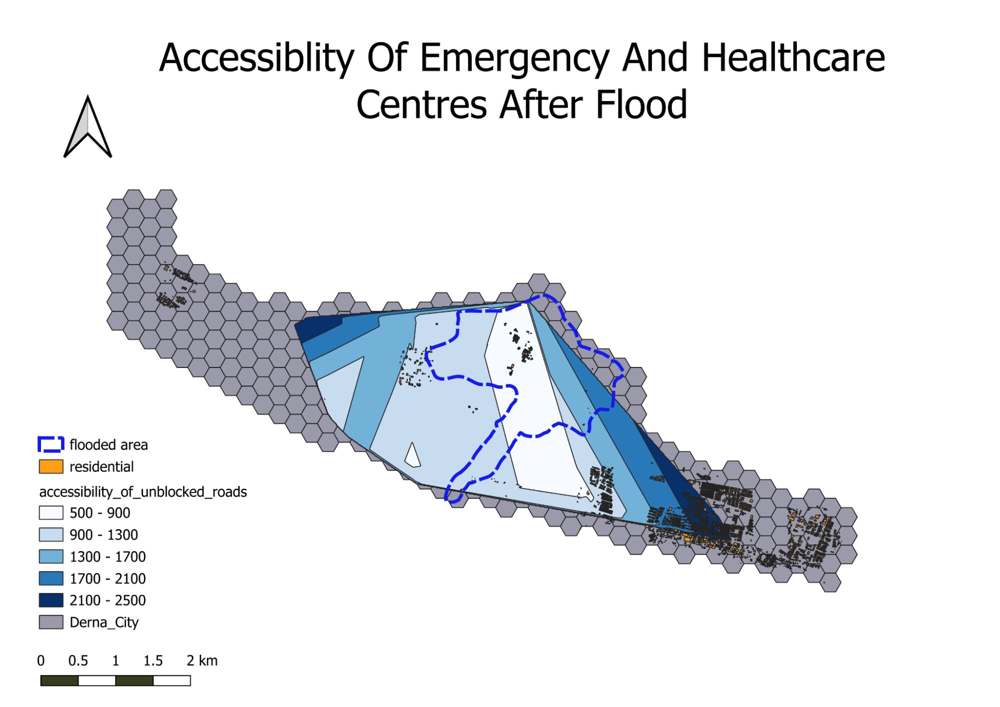
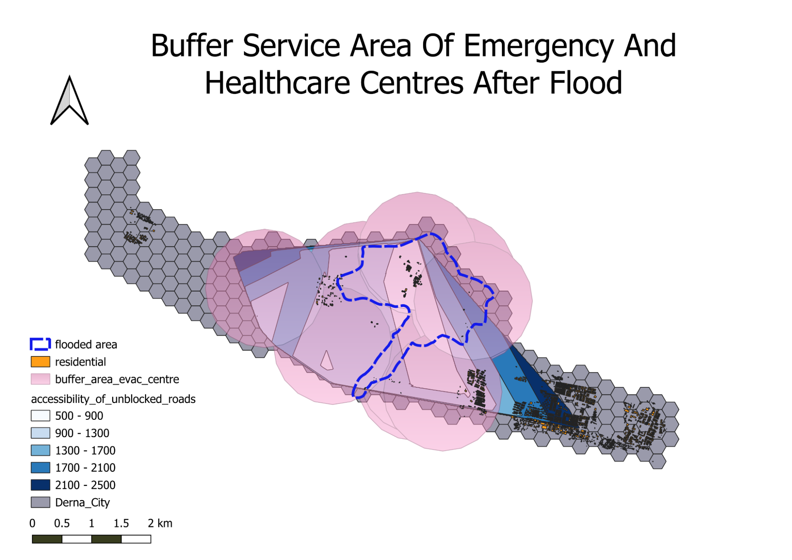
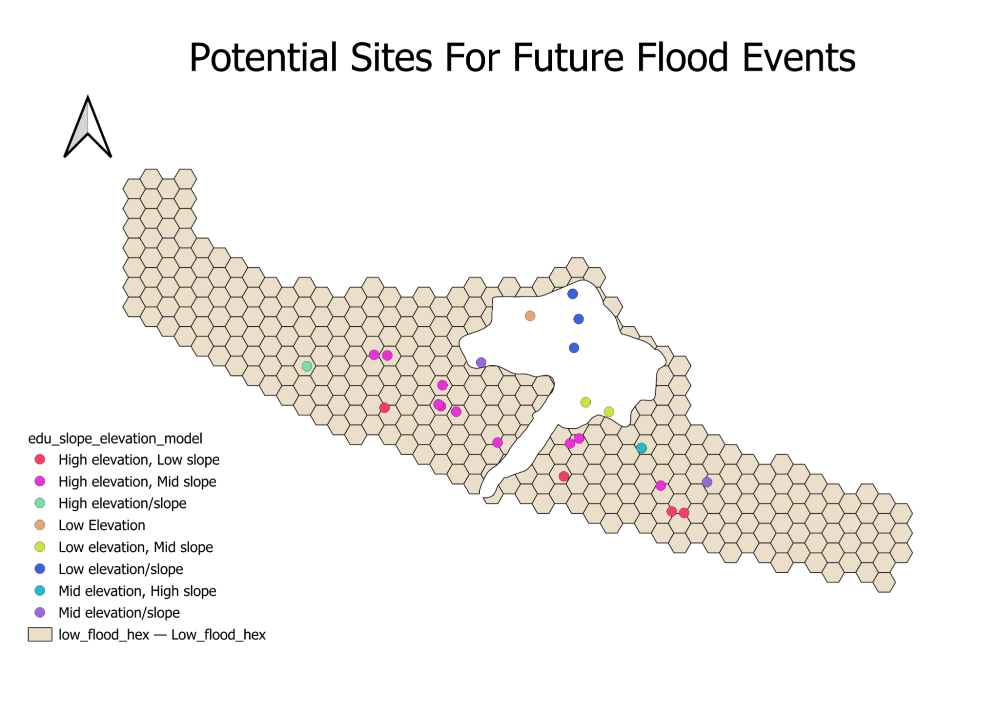
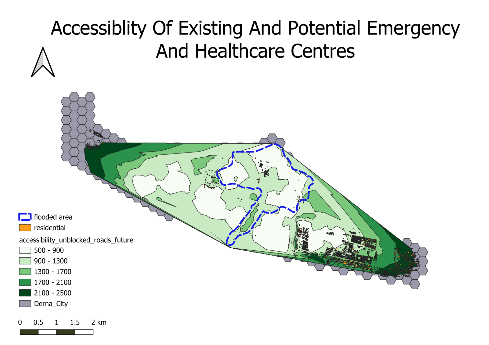
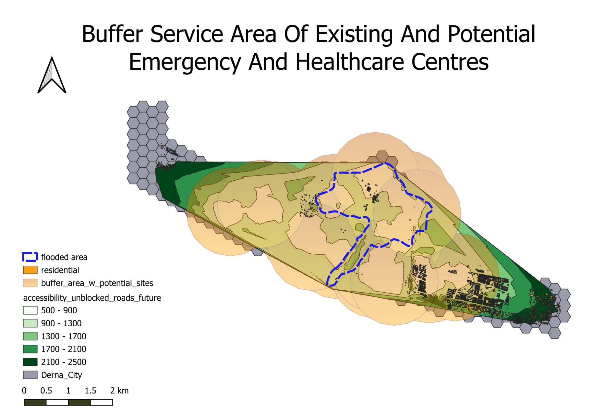
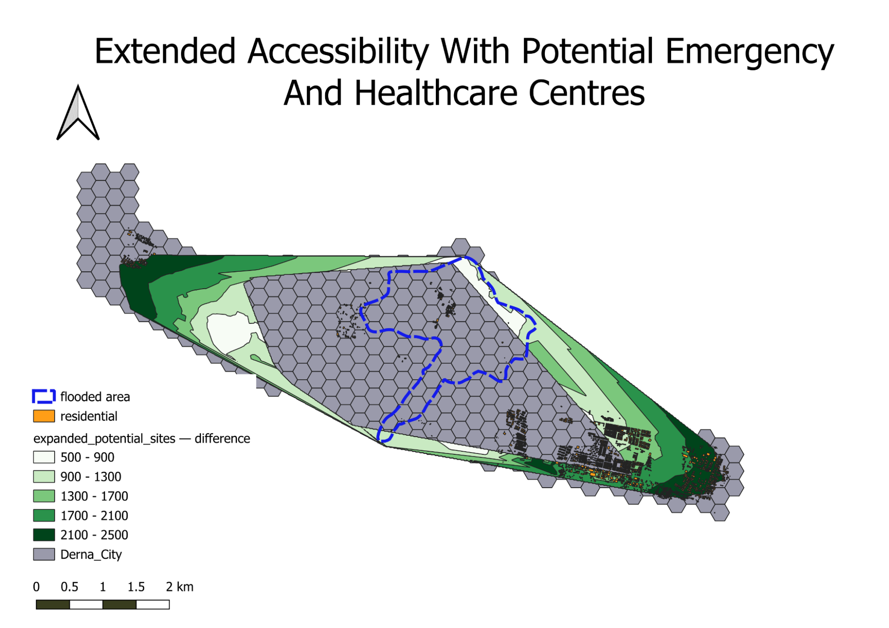

Analysis
Derna City’s Accessibility During a Flood (Satellite Image)
The following maps shows the accessibility of residential towns to evacuation centres and healthcare facilities. The maps also shows some potential education centres that can be used as evacuation centres during a disaster.
Road Network Of Derna City Before Flood

The map shows that majority of the health care facilities are within the flooded area. This indicates that these facilities could be at a risk of flooding in the event of a more severe flood, which would require residents living in the flood to travel to more distant shelters. Additionally, there are much fewer road network within the flooded area, which reduces the accessibility between residents and evacuation centres.
Road Network Of Derna City After The Flood

This map shows the aftermath of the flood, where the roads are damaged and blocked, which cannot be used. It also shows the flood had caused a lot of damage to the infrastructures, where the flood swept the buildings into the sea, polluting it. Furthermore, the primary highway in Derna City was damaged from the flood, which is the only major road that runs along the entire east-west length, significantly diminishing overall accessibility.
Accessibility of Existing Centres After Flood

The recent flooding event caused roads to be blocked and damaged, causing a significant reduction in the accessibility of shelters. There are now fewer highly accessible shelters. Additionally, residents who are displaced from the flood have to travel more than 1km to access shelters outside of the flooded area if the shelters in the flooded area are not usable. The blocked roads also resulted in fewer residential towns to fall within 2.5 km of a shelter compared to Figure 1.
Accessibility of Existing and Potential Shelters After Flood

We mapped out the accessibility of existing and education sites that have high elevation/slope. This significantly increased the accessibility of residential towns to shelters, where majority of residents are able to access a shelter. Moreover, it offers residents with more evacuation options, ensuring that if a shelter is overcrowded, residents are still able to move to another nearby shelter. It can be see that there are many more shelters available outside of the flooded area, allowing residents to safely evacuate from the flood.
Derna City’s Accessibility During a Flood (With Residential Town)
Accessibility of Shelters Before a Flood
Prior to the flood, we observe a lack of accessibility of residential areas to emergency services and healthcare facilities. A substantial number of residential towns on the East and West of Derna City are entirely inaccessible to shelters. Moreover, majority of residential towns that have access to shelters are situated more than 1km away. This suggests that during an emergency, most residents will have to evacuate to shelters that are more than 1 km away from them (as seen in dark red areas where two other residential towns are found from legend), which is not very ideal.
Accessibility of Shelters After a Flood

Following a flood, roads are blocked and damaged, leading to a drastic reduction in the accessibility of healthcare and emergency centres compared to Figure 1. There are now fewer highly accessible shelters as compared to Figure 1 (as seen from reduced white areas ). Since the only residential town that falls within the 900m is also within the flooded area, the shelters in that location may have been flooded as well. Furthermore, residents who are displaced from the flood have to travel more than 1km to access shelters outside of the flooded area. The blocked roads also resulted in fewer residential towns to fall within 2.5 km of a shelter compared to Figure 1.
Buffer Service Area of Shelters After a Flood

In Figure 3, we observe the delineated buffer service area that the shelters can cover within a 1 km radius. The figure suggests that most of the residents affected by the flooded area are within the service area (as seen where the entire flooded area within the pink buffers). However, residential towns in the East and West of Derna City are not covered by the buffer service area, which suggests that these areas have less accessibility to a shelter. In the event where a more impactful flood strikes Derna City, the residential towns that are more than 2.5 km away and not within the service area of a shelter will become more vulnerable if they are flooded.
Potential Sites As Evacuation Centres

We analysed the elevation level and slope degree of potential sites to be used as emergency shelters during a flood event. Since we want to identify areas at risk of flooding and understand which parts of Derna City are most vulnerable, having a high elevation level and slope degree are key. Higher elevation level suggests that the area is less prone to flooding. Higher slope degree will generate more velocity than gentle slopes, which increases surface runoff and discourages ponding.
As our aim is to identify safe locations for emergency shelters and reduce the vulnerability of residents, we assigned greater importance to elevation levels over slope degrees. Low elevation areas, when combined with mid or high slope degrees, can serve as valuable sites for emergency shelters. Thus, we excluded areas with low slope degree from our potential sites selections. The potential sites that we chose are marked in pink, green, yellow, light blue and purple.
These sites are located in lower risk flood areas and are less vulnerable to flooding. This is compared to points within the flooded area that have low slope degree, the blue and orange points, which are more vulnerable and already susceptible to floods.
Accessibility With Existing and Potential Shelters

In Figure 5, we added the potential sites that could be used as emergency shelters along with the existing ones to create a new accessibility map. There are now more and larger white areas which suggests increased accessibility, and there are multiple of such areas outside of the flooded area (as seen from white areas outside blue dashed lines in legend).
This expanded accessibility fosters greater mobility for displaced residents within the flooded area, allowing them to reach alternative shelters. Some parts of the residential towns in the East and West of Derna City also fall within the white areas now, where they previously were in the furthest dark green areas of 2.1 km to 2.5km in Figure 1, and not covered in Figure 2.
The majority of residential areas now have improved access to shelters, resulting in a notable reduction in the vulnerability of these towns during emergency situations.
Buffer Service Area of Shelters With Potential Sites

Like Figure 3, we observe the delineated buffer service area that the shelters can cover within a 1 km radius. The figure suggests that most of the residents affected by the flooded area are within the service area (as seen from legend where the entire flooded area is found within the orange buffers).
However, the new buffer service area covers a larger extent as compared to Figure 3, where residential towns in the East of Derna City are now covered by the buffer service area. This suggests that these areas have greater accessibility to a shelter. In an emergency, these residential towns will become less vulnerable to flooding impacts as they are within both the service area and 2.5 km from a shelter.
Extended Accessibility of Potential Sites

We observe the expanded area of accessibility to emergency shelters for residential towns if the potential sites are utilised. We can note that there is an expansion in all directions of Derna City, incorporating residential towns that were previously not covered. The majority of residential towns are now covered, with the exception of a small part in the West.
Furthermore, there is an increase in highly accessible areas, as seen from legend where there are new white areas in the West and North of Derna City. Overall, most areas are within 2.5 km of a shelter, which reduces the vulnerability of residential areas during a flood, as individuals can access shelter more promptly.